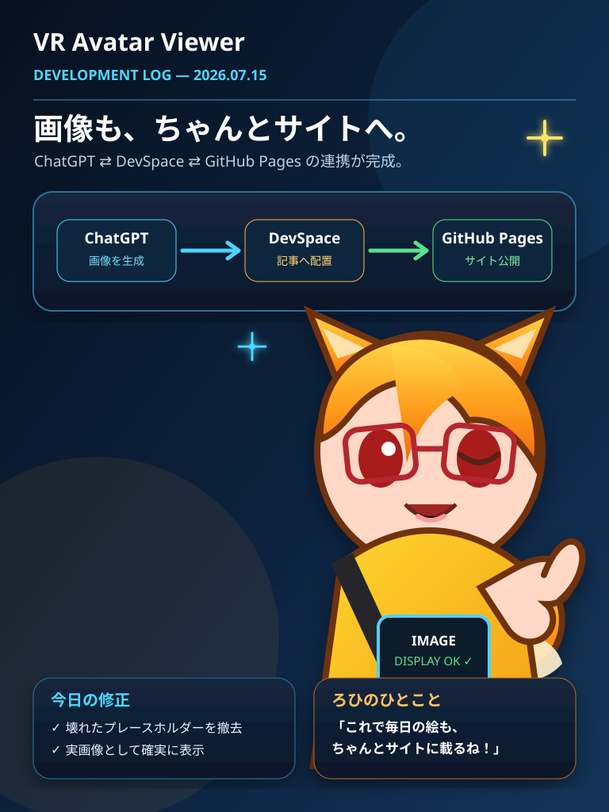

2026.07.15 / Development Log
公式サイト、いよいよ公開へ
今日はUnityの中ではなく、VR Avatar Viewerを外の世界へ紹介するための場所を作りました。
この記事は実際の作業内容を基礎にしていますが、会話や表現の一部には読み物としての演出が含まれます。

まず「何のサイトなのか」を決める
最初に用意されていたのは、リポジトリ名だけが書かれたREADMEでした。そこへ単に日記を置くだけでは、初めて訪れた人は「これは何のプロジェクトなのか」が分かりません。
そこでトップページには、VR Avatar ViewerがVRM・VABアバターの表示、ポーズや表情の編集、ライト・カメラ操作、撮影、VR鑑賞を目標にしたWindows向けアプリであることを明記しました。
開発日記を“変更履歴”で終わらせない
開発日記はコミット一覧のコピーではなく、なぜその機能が必要になったのか、どこで困ったのか、どう直したのかを残す場所にします。
「今日は何行書いたか」より、「なぜその一行が必要だったか」を残したい。
実際の開発内容を土台にしつつ、ろひとChatGPTの会話を少しだけ脚色し、技術資料と読み物の間を目指します。
今日整備したもの
- VR Avatar Viewerを初めて知る人向けのトップページ
- アプリの特徴と現在の公開状況
- 開発日記の一覧ページ
- 今日の記事ページ
- スマートフォンでも読めるレスポンシブデザイン
- GitHub Pagesへ配信するGitHub Actionsワークフロー
ろひ「サイトを作るまでが開発です」
アプリ本体の実装だけでも作業は山ほどあります。それでも、作ったものを説明し、進捗を残し、後から経緯を振り返れる場所は必要です。
ChatGPTが「ではトップページから作りましょう」と言い、ろひが「その前にcloneして」と返し、ようやく本当にファイルが増え始めました。開発の第一歩が、実装ではなくリポジトリのcloneだったのは少しだけ面白いところです。
次に進めたいこと
今後は実際のアプリ画面や機能紹介を追加し、マニュアル、更新情報、ダウンロード案内へ広げます。開発日記も、その日の変更を正確に確認しながら積み重ねていきます。
毎日少しずつでも、確実に。 公式サイトの最初の一日です。